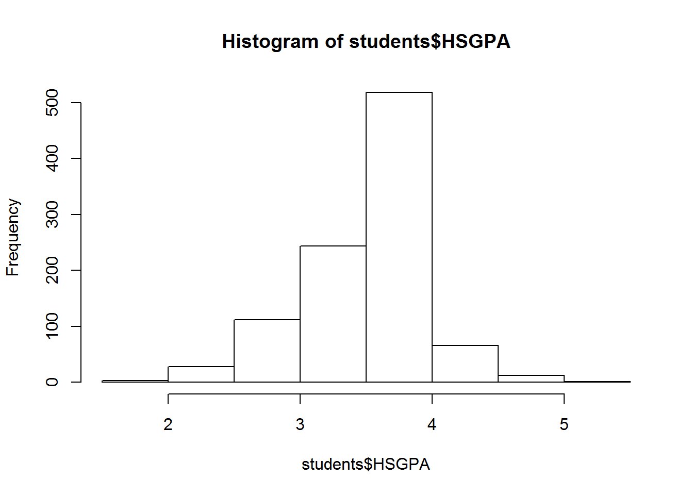
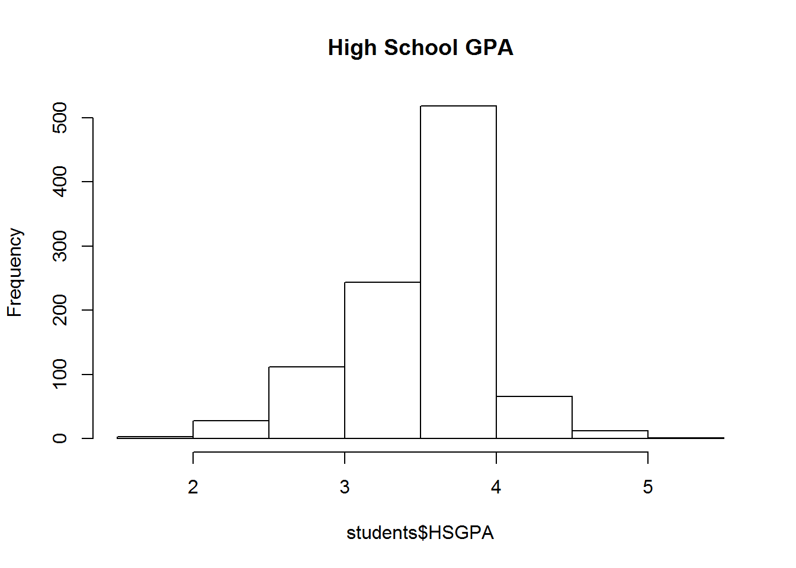
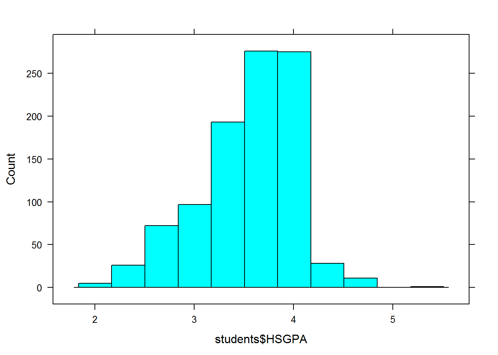
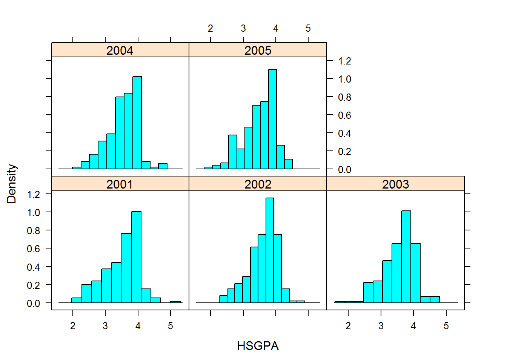
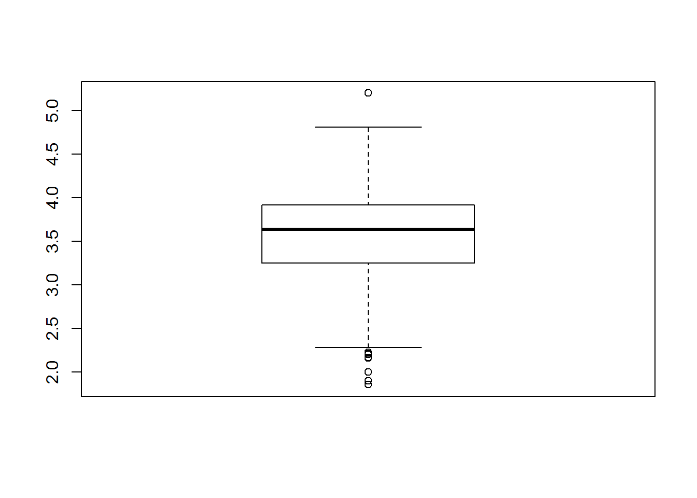
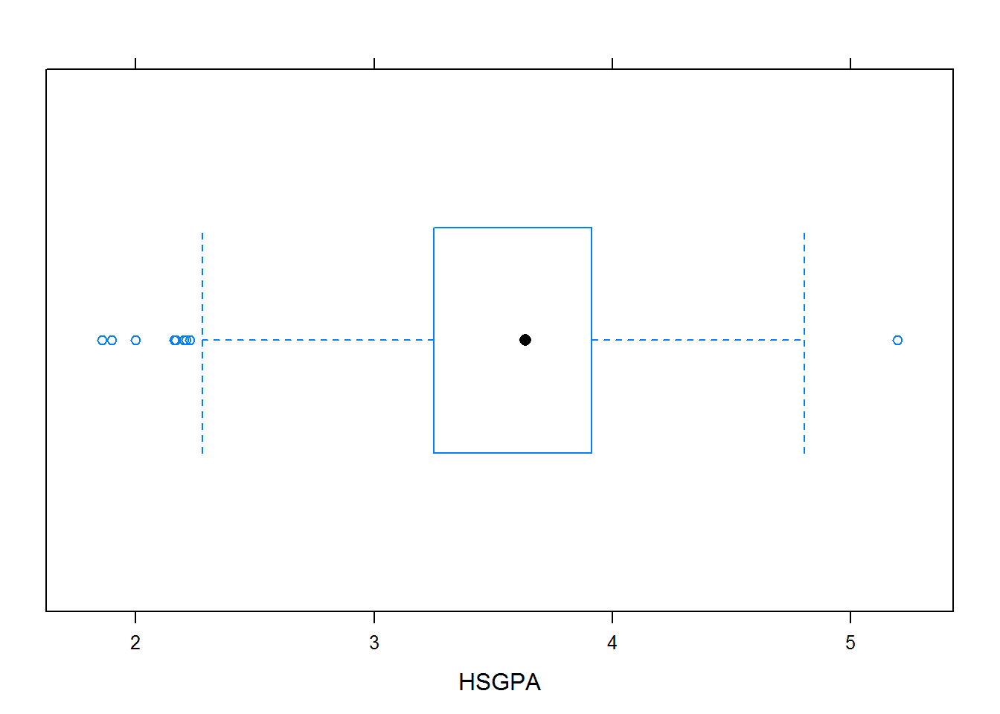
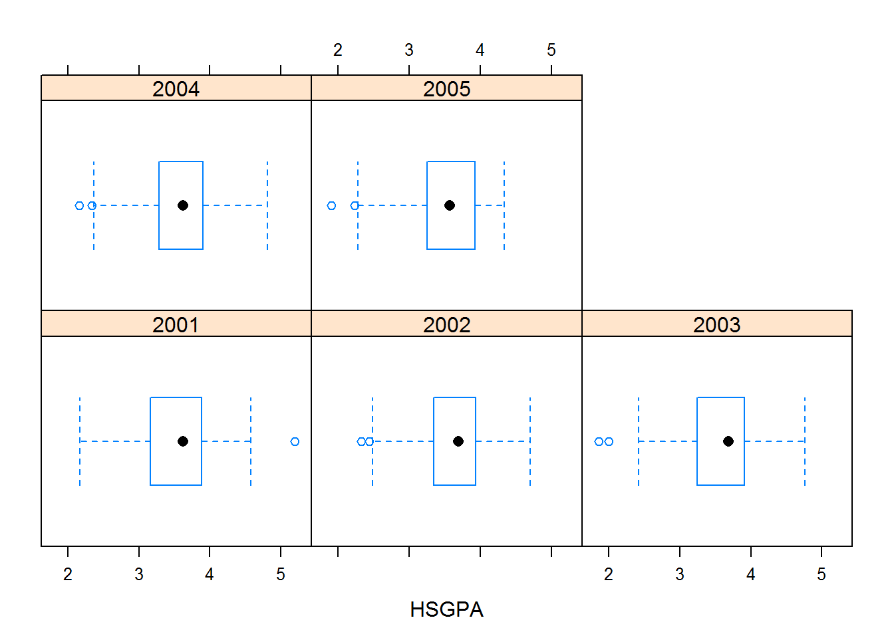
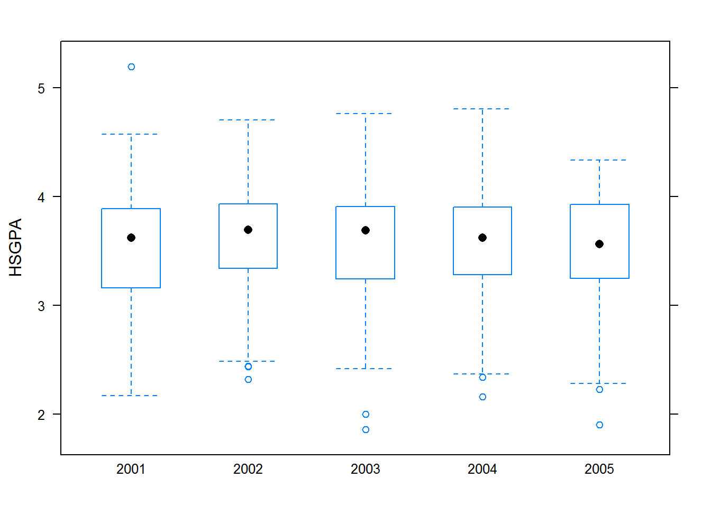
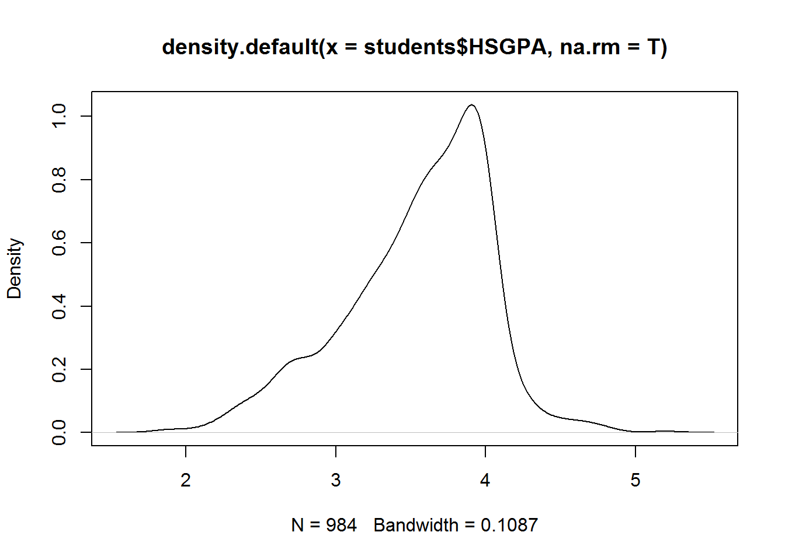
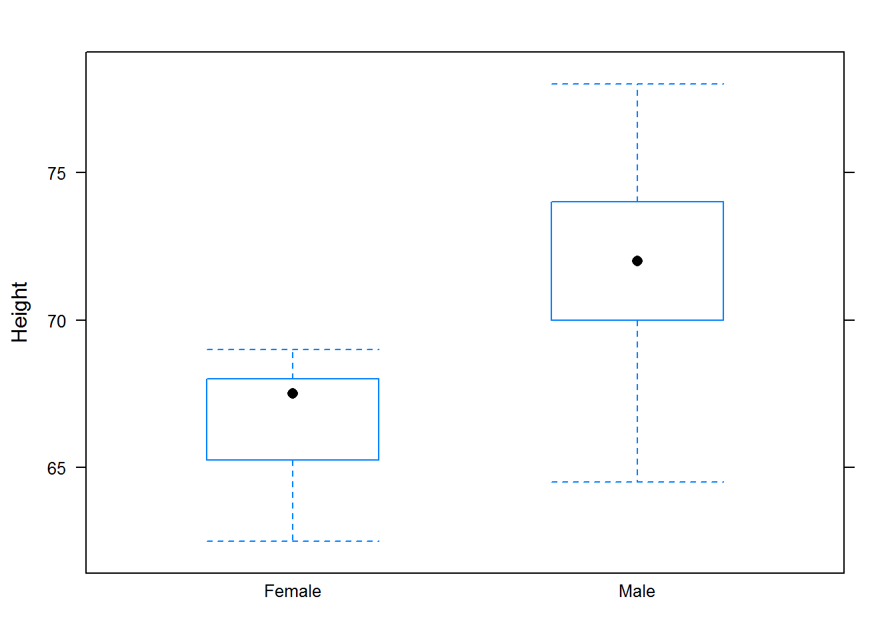

1.2 Summarizing Univariate Data
1.2.1 Objectives
- Create univariate summaries, both numerical and graphical
- Understand and use data structures (e.g. str, head, $)
- Learn definitions of new terms such as mean, median, standard deviation, and p-quantile.
1.2.2 Intro Material
This class is based on empirical deductive reasoning. We have a question or conjecture and then we collect data and see if it supports or refutes the conjecture. Often we have only a sample from a population and thus must you probability to help in the decision.
With the development of powerful computers, we are now also able to perform empirical inductive reasoning. This is what occurs in the areas of data mining and machine learning. Math 378 will emphasize these ideas.
Data is a the heart of both methods.
1.2.3 Data Collection
We don’t really have a hypothesis at this point just an observation that this class of Math 377 has some tall people in it. Let’s collect the data and summarize.
It is often easier to enter data in an CSV, comma separated values, in Excel. We will then read the data into a data frame in R. This is done using the import tab in RStudio.
Open a new RMarkdown file to store our work.
Now that we have the data and before we start, let’s practice some of the ideas in Sections 1.1 and 1.2 of the book.
1.2.4 Background
Load libraries.
library('fastR')
library(Hmisc)
library(lattice)Look at available data sets. Use the command.
data()Let’s use the data set students in the fastR package. Before we start, let’s get a feel for the data.
The str function gives the structure of the data
str(students)## 'data.frame': 1000 obs. of 6 variables:
## $ ACT : int 30 20 23 30 21 NA 23 25 30 21 ...
## $ SAT : int NA NA 1060 1420 1010 730 NA NA NA NA ...
## $ Grad : logi TRUE TRUE TRUE TRUE TRUE TRUE ...
## $ GradGPA: num 3.61 2.99 3.58 3.51 2.7 ...
## $ HSGPA : num 3.74 2.97 3.51 3.99 3.25 ...
## $ Cohort : int 2002 2004 2002 2005 2005 2001 2003 2005 2003 2003 ...To look at the first few rows
head(students)## ACT SAT Grad GradGPA HSGPA Cohort
## 1 30 NA TRUE 3.613 3.743 2002
## 2 20 NA TRUE 2.993 2.968 2004
## 3 23 1060 TRUE 3.582 3.507 2002
## 4 30 1420 TRUE 3.513 3.990 2005
## 5 21 1010 TRUE 2.703 3.253 2005
## 6 NA 730 TRUE 3.360 2.621 2001If you want a nice output when you knit into an html or pdf file
knitr::kable(
head(students)
)| ACT | SAT | Grad | GradGPA | HSGPA | Cohort |
|---|---|---|---|---|---|
| 30 | NA | TRUE | 3.613 | 3.743 | 2002 |
| 20 | NA | TRUE | 2.993 | 2.968 | 2004 |
| 23 | 1060 | TRUE | 3.582 | 3.507 | 2002 |
| 30 | 1420 | TRUE | 3.513 | 3.990 | 2005 |
| 21 | 1010 | TRUE | 2.703 | 3.253 | 2005 |
| NA | 730 | TRUE | 3.360 | 2.621 | 2001 |
summary(students)## ACT SAT Grad GradGPA
## Min. :14.00 Min. : 730 Mode :logical Min. :2.075
## 1st Qu.:23.00 1st Qu.:1080 FALSE:268 1st Qu.:3.033
## Median :26.00 Median :1180 TRUE :732 Median :3.389
## Mean :25.94 Mean :1199 Mean :3.322
## 3rd Qu.:29.00 3rd Qu.:1310 3rd Qu.:3.657
## Max. :36.00 Max. :1590 Max. :4.000
## NA's :169 NA's :636 NA's :268
## HSGPA Cohort
## Min. :1.857 Min. :2001
## 1st Qu.:3.252 1st Qu.:2002
## Median :3.635 Median :2003
## Mean :3.546 Mean :2003
## 3rd Qu.:3.912 3rd Qu.:2004
## Max. :5.197 Max. :2005
## NA's :16You can also use the help menu to find out more about the data, ?students
Some basic summaries of the data. Since Grad is discrete we summarize with a table.
table(students$Grad)##
## FALSE TRUE
## 268 732The variable HSGPA is more like a continuous variable.
mean(students$HSGPA,na.rm=TRUE)## [1] 3.545669median(students$HSGPA,na.rm=TRUE)## [1] 3.6345quantile(students$HSGPA,na.rm = TRUE)## 0% 25% 50% 75% 100%
## 1.85700 3.25250 3.63450 3.91225 5.19700The calculation of quantiles can be confusing, but the book does a nice job explaining how it is done. We can also get help on the function using ?quantile.
Notice that if we did remove missing values, we would get an NA.
mean(students$HSGPA)## [1] NAFor dispersion, we can summarize with variance and standard deviation.
sd(~GradGPA,data=students,na.rm=T)## [1] 0.4220109sd(students$GradGPA,na.rm=T)## [1] 0.4220109var(students$GradGPA,na.rm=T)## [1] 0.1780932A useful function in the mosaic package is favstats.
favstats(~HSGPA,data=students)## min Q1 median Q3 max mean sd n missing
## 1.857 3.2525 3.6345 3.91225 5.197 3.545669 0.4793097 984 16Notice we used the R formula notation discussed in the book.
Breaking it down by year group.
favstats(HSGPA~Cohort,data=students)## Cohort min Q1 median Q3 max mean sd n missing
## 1 2001 2.167 3.16350 3.6195 3.88575 5.197 3.502119 0.5393179 194 6
## 2 2002 2.320 3.34325 3.6940 3.92825 4.705 3.600908 0.4266389 218 3
## 3 2003 1.857 3.25100 3.6905 3.90925 4.762 3.563235 0.4829192 200 4
## 4 2004 2.160 3.28400 3.6200 3.90600 4.806 3.544259 0.4631015 185 2
## 5 2005 1.900 3.24950 3.5650 3.92600 4.337 3.509059 0.4807082 187 1summary(HSGPA~Grad,data=students,fun=favstats)## HSGPA N= 984 , 16 Missing
##
## +-------+---+---+-----+------+-------+-------+-----+--------+---------+---+--------+
## | | |N |min |Q1 |median |Q3 |max |mean |sd |n |missing |
## +-------+---+---+-----+------+-------+-------+-----+--------+---------+---+--------+
## |Grad |No |263|1.857|2.8730|3.3800 |3.72250|5.197|3.307817|0.5373946|263|0 |
## | |Yes|721|1.900|3.3800|3.7040 |3.94900|4.806|3.632430|0.4246933|721|0 |
## +-------+---+---+-----+------+-------+-------+-----+--------+---------+---+--------+
## |Overall| |984|1.857|3.2525|3.6345 |3.91225|5.197|3.545669|0.4793097|984|0 |
## +-------+---+---+-----+------+-------+-------+-----+--------+---------+---+--------+Visual summaries. The command hist is in the base package while histogram is in lattice.
hist(students$HSGPA)
With a title.
hist(students$HSGPA,main="High School GPA")
The command histogram has more options.
histogram(students$HSGPA)histogram(students$HSGPA,type="count")
A panel display to show histograms next to each other.
histogram(~HSGPA|factor(Cohort),data=students)
Another type of plot is the box and whiskers plot.
From the base package.
boxplot(students$HSGPA)
And from lattice.
bwplot(~HSGPA,students)
bwplot(~HSGPA|factor(Cohort),students)
bwplot(HSGPA~factor(Cohort),students)
Histograms are notoriously sensitive to the parameters used to build them such as number of bins and location of bins. A better method is to use a density plot.
plot(density(students$HSGPA,na.rm=T))
And for interest, another variable.
bwplot(GradGPA~factor(Cohort),students)
Now you investigate the height data we took in class.
Lesson2_Data <- read.csv("Lesson2_Height.csv")str(Lesson2_Data)## 'data.frame': 25 obs. of 2 variables:
## $ Gender: Factor w/ 2 levels "Female","Male": 2 2 2 2 2 2 2 2 2 2 ...
## $ Height: num 69 78 77 64.5 67 72 72 67 75 77 ...summary(Lesson2_Data)## Gender Height
## Female: 8 Min. :62.50
## Male :17 1st Qu.:67.00
## Median :70.00
## Mean :70.14
## 3rd Qu.:73.00
## Max. :78.00bwplot(~Height,Lesson2_Data)
bwplot(Height~Gender,Lesson2_Data)
summary(Height~Gender,data=Lesson2_Data,fun=favstats)## Height N= 25
##
## +-------+------+--+----+------+-------+---+----+--------+--------+--+--------+
## | | |N |min |Q1 |median |Q3 |max |mean |sd |n |missing |
## +-------+------+--+----+------+-------+---+----+--------+--------+--+--------+
## |Gender |Female| 8|62.5|65.875|67.5 |68 |69 |66.62500|2.248015| 8|0 |
## | |Male |17|64.5|70.000|72.0 |74 |78 |71.79412|3.804023|17|0 |
## +-------+------+--+----+------+-------+---+----+--------+--------+--+--------+
## |Overall| |25|62.5|67.000|70.0 |73 |78 |70.14000|4.144575|25|0 |
## +-------+------+--+----+------+-------+---+----+--------+--------+--+--------+